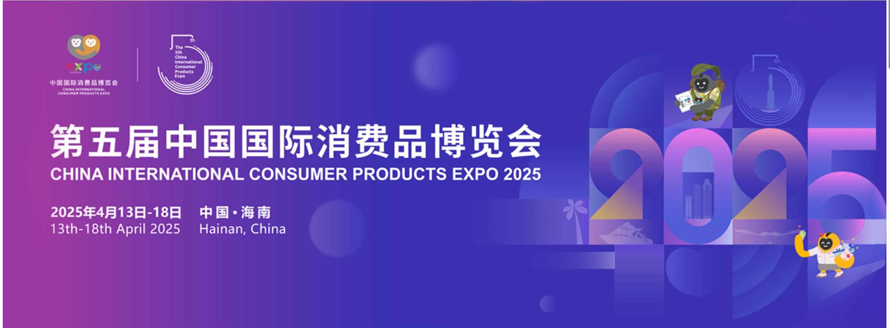

Project 02
第五届中国国际消费品博览会
海南国际经济与贸易发展局｜会展活动策划执行
项目封面

项目概览
项目时间
2025.02 – 2025.04
我的身份
海南国际经济与贸易发展局｜活动策划执行
项目地点
海南 · 海口
项目简介
中国国际消费品博览会（China International Consumer Products Expo）是我国唯一以消费精品为主题的国家级展会，也是亚太地区规模最大的消费精品展之一。
展会汇聚来自全球多个国家和地区的品牌、采购商及专业观众，是展示国际消费品牌、促进经贸合作的重要平台。
在展会筹备及举办期间，我参与企业沟通、嘉宾接待及现场运营保障等工作，完整体验了大型国际展会从前期筹备到现场执行的全过程。
我的工作
企业沟通
项目筹备阶段，对接20余家参展企业，协助收集参展资料、传递通知、整理反馈意见，并及时向项目组同步企业需求，保障筹备工作顺利推进。
嘉宾服务
负责国内外嘉宾及观众现场接待、路线引导和场馆咨询服务，根据不同展区及活动安排提供指引，累计服务观众500余人。
现场运营
展会期间负责展馆秩序维护、现场巡查及志愿者协同工作，及时处理现场突发情况，确保展区运行平稳、有序。
项目亮点
20+
参展企业沟通协调
500+
服务观众人次
国际级
参与国家级国际展会运营
协同执行
企业、嘉宾、志愿者多方协作保障
我的收获
这是我第一次真正参与国际大型展会运营工作。相比课堂中的会展策划，我更加直观地理解了展会现场运营的复杂性。
从企业沟通、嘉宾服务到现场协调，每一个环节都需要高效的信息传递和团队配合。在高强度、多任务并行的工作环境中，我不断提升了沟通协调能力、现场应变能力以及多任务处理能力，也进一步理解了大型国际展会背后的运营逻辑与协作机制。